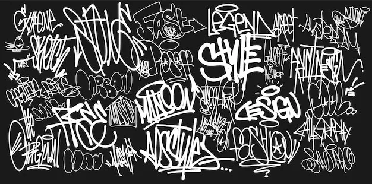
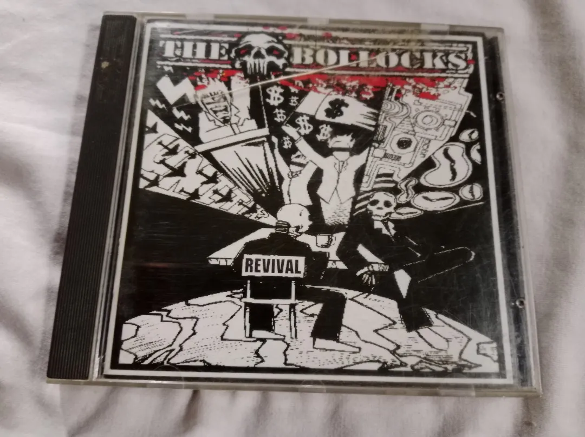
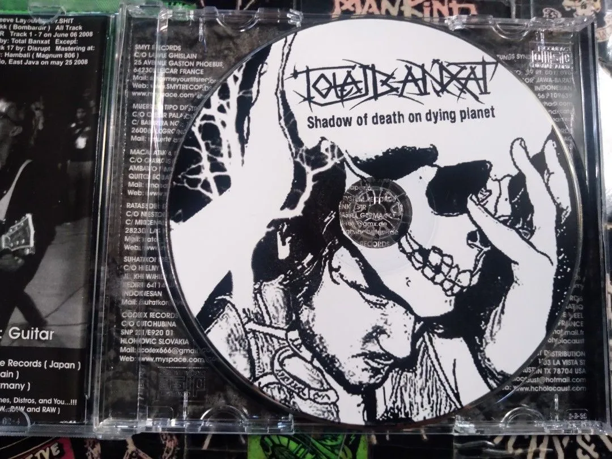
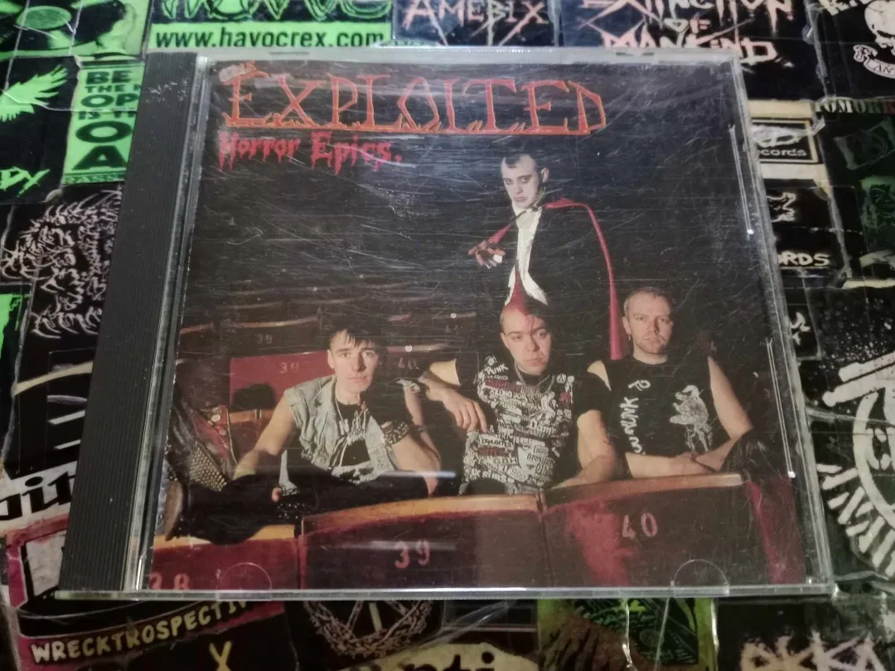
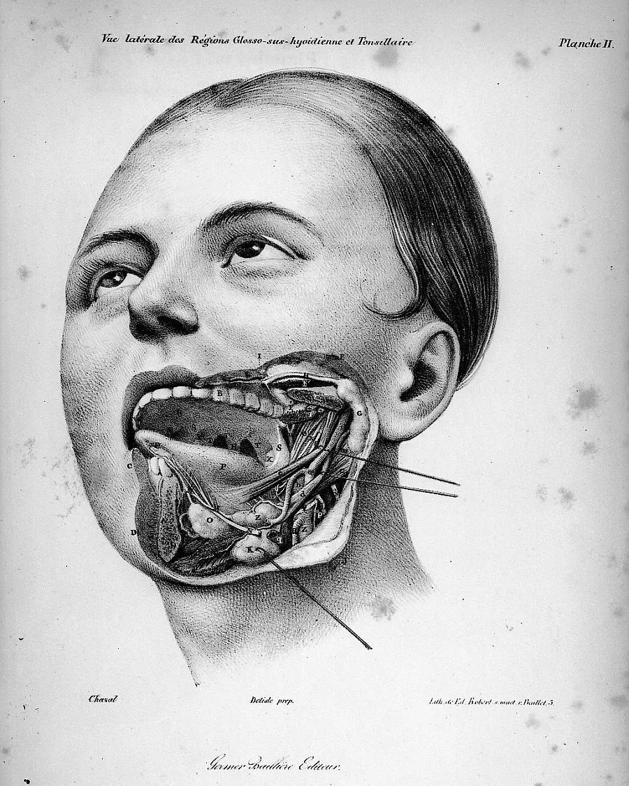
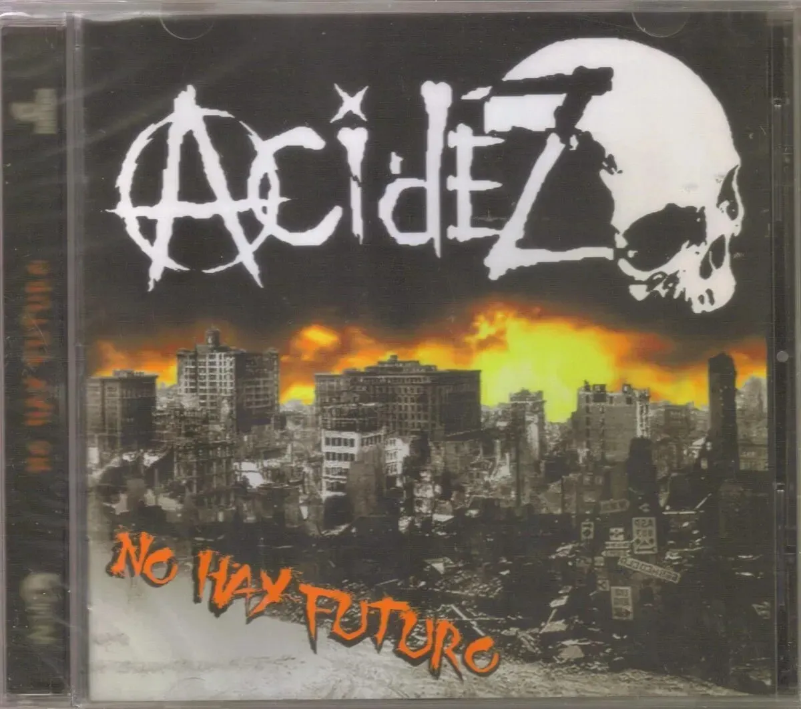
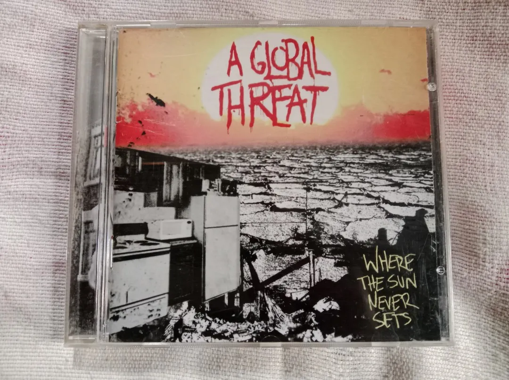
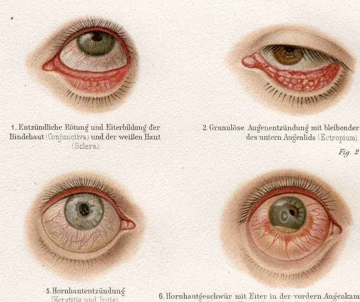
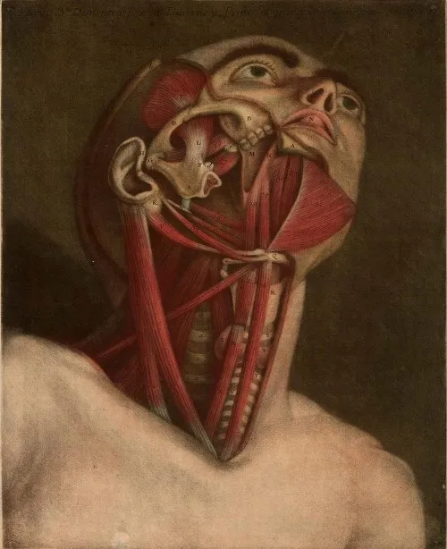
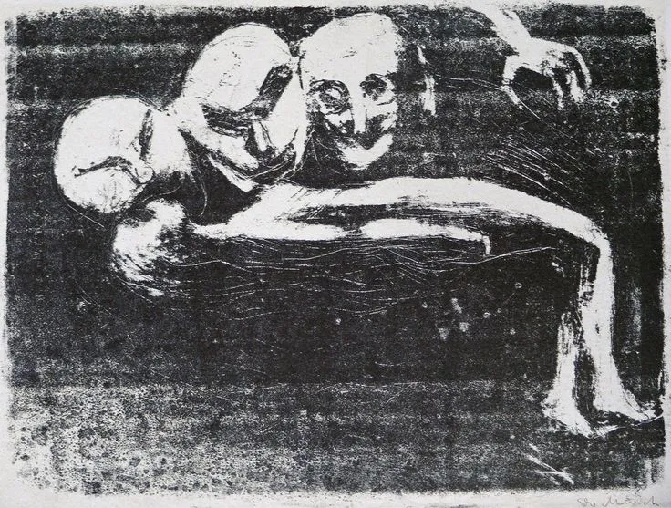
-_-Gli-ubriachi_-Illustrato-con-XII-xilografie-originali-dell'autore..webp)
-_-Gli-ubriachi_-Illustrato-con-XII-xilografie-originali-dell'autore.webp)
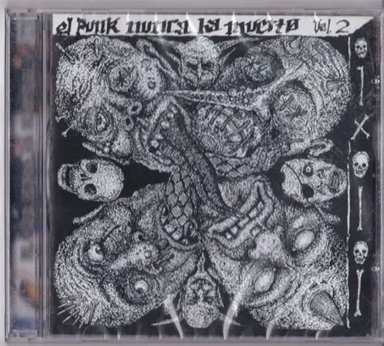
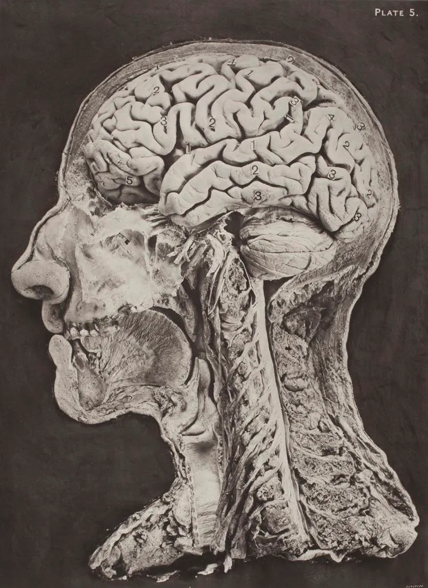
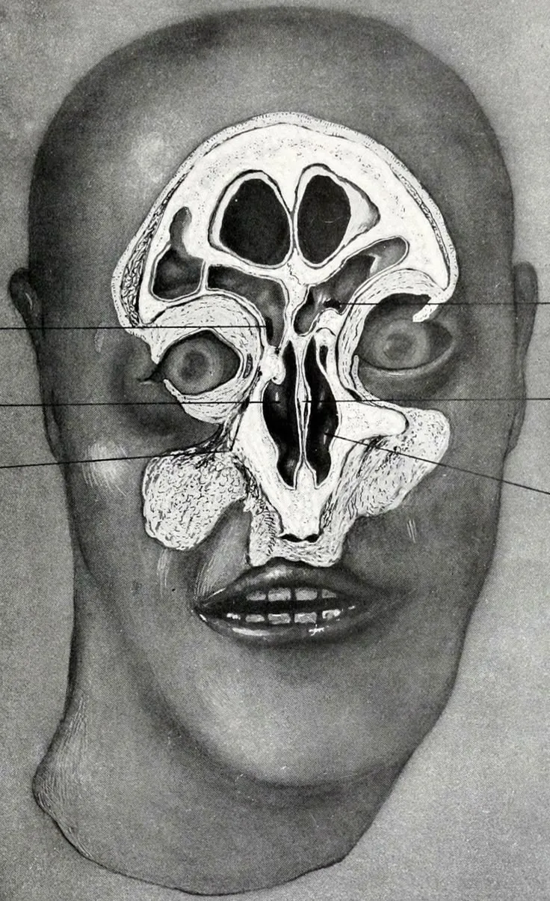
PackagingPackaging
CD CoversCD Covers
I started where all good punk design starts: by hand. Tagged the logo. Scratched out sketches. Photocopied, cut, and reassembled. Two hardcore CD covers — Retro Paranoid and Total — built from the same dirt the music comes from.Ho iniziato da dove comincia ogni buon design punk: a mano. Taggato il logo. Schizzi graffiati. Fotocopiato, tagliato e ricomposto. Due copertine CD hardcore — Retro Paranoid e Total — costruite con la stessa sporcizia da cui nasce la musica.